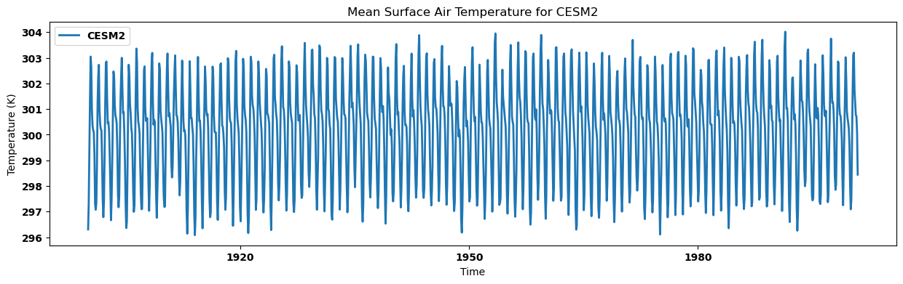
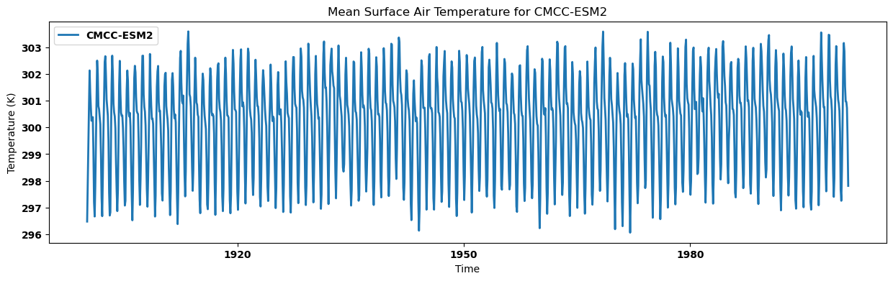
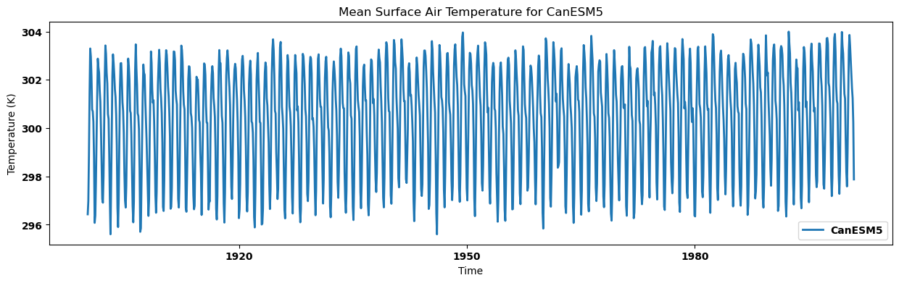
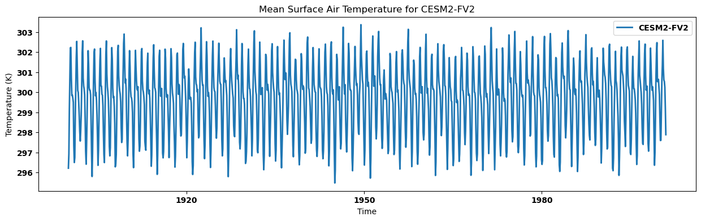
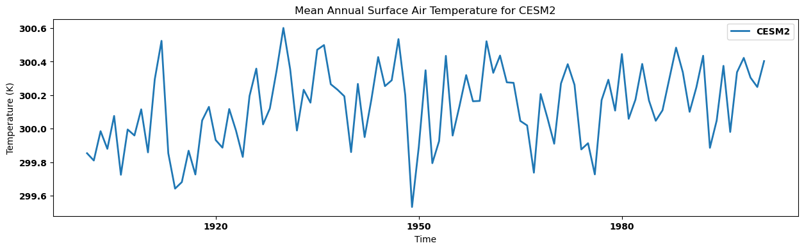
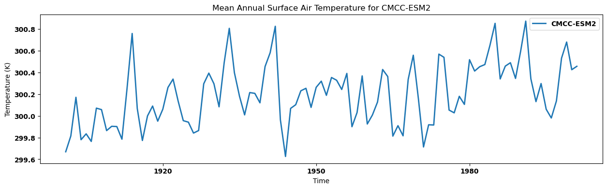
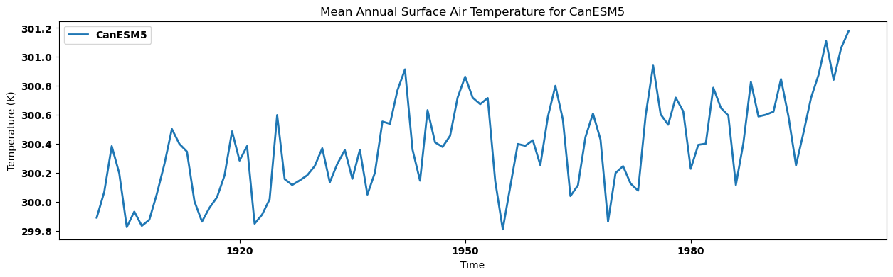
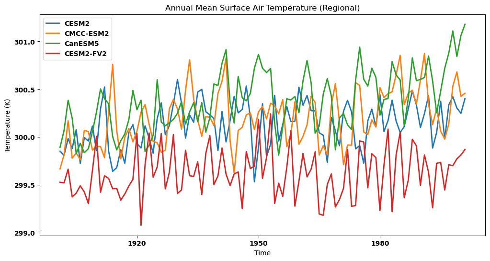

Complex Searching with intake and analysing employing xarray
Contents

Complex Searching with intake and analysing employing xarray¶
Overview¶
This tutorial we will present access multiple historical (as an example here) data available and analyze using intake. Put them in a dictionary format employing xarray and plotting simple area average time series over a specific region.
Imports¶
import warnings
import intake
from distributed import Client
from matplotlib import pyplot as plt
import numpy as np
import pandas as pd
import xarray as xr
import dask
xr.set_options(display_style='html')
warnings.filterwarnings("ignore")
cat_url = "https://storage.googleapis.com/cmip6/pangeo-cmip6.json"
col = intake.open_esm_datastore(cat_url)
col
pangeo-cmip6 catalog with 7674 dataset(s) from 514818 asset(s):
| unique | |
|---|---|
| activity_id | 18 |
| institution_id | 36 |
| source_id | 88 |
| experiment_id | 170 |
| member_id | 657 |
| table_id | 37 |
| variable_id | 700 |
| grid_label | 10 |
| zstore | 514818 |
| dcpp_init_year | 60 |
| version | 736 |
| derived_variable_id | 0 |
cat = col.search(experiment_id=["historical"],
variable_id = ["tas"],
member_id = ["r1i1p1f1"],
table_id = ["Amon",],
source_id = [ "CMCC-ESM2", "CanESM5", "CESM2", "CESM2-FV2", ]
)
cat.df
| activity_id | institution_id | source_id | experiment_id | member_id | table_id | variable_id | grid_label | zstore | dcpp_init_year | version | |
|---|---|---|---|---|---|---|---|---|---|---|---|
| 0 | CMIP | NCAR | CESM2 | historical | r1i1p1f1 | Amon | tas | gn | gs://cmip6/CMIP6/CMIP/NCAR/CESM2/historical/r1... | NaN | 20190308 |
| 1 | CMIP | CCCma | CanESM5 | historical | r1i1p1f1 | Amon | tas | gn | gs://cmip6/CMIP6/CMIP/CCCma/CanESM5/historical... | NaN | 20190429 |
| 2 | CMIP | NCAR | CESM2-FV2 | historical | r1i1p1f1 | Amon | tas | gn | gs://cmip6/CMIP6/CMIP/NCAR/CESM2-FV2/historica... | NaN | 20191120 |
| 3 | CMIP | CMCC | CMCC-ESM2 | historical | r1i1p1f1 | Amon | tas | gn | gs://cmip6/CMIP6/CMIP/CMCC/CMCC-ESM2/historica... | NaN | 20210114 |
dset_dict = cat.to_dataset_dict(zarr_kwargs={'consolidated': True})
list(dset_dict.keys())
--> The keys in the returned dictionary of datasets are constructed as follows:
'activity_id.institution_id.source_id.experiment_id.table_id.grid_label'
100.00% [4/4 00:16<00:00]
['CMIP.NCAR.CESM2.historical.Amon.gn',
'CMIP.CMCC.CMCC-ESM2.historical.Amon.gn',
'CMIP.CCCma.CanESM5.historical.Amon.gn',
'CMIP.NCAR.CESM2-FV2.historical.Amon.gn']
ds = {}
for key in dset_dict.keys():
# Sort the dataset by time
sorted_dataset = dset_dict[key].sortby("time")
# Subset data for years 1900-2000
ds[key] = sorted_dataset.sel(time=slice("1900", "2000"))
# Optional: Print a message indicating dataset processing
print(f"Processing dataset: {key}")
Processing dataset: CMIP.NCAR.CESM2.historical.Amon.gn
Processing dataset: CMIP.CMCC.CMCC-ESM2.historical.Amon.gn
Processing dataset: CMIP.CCCma.CanESM5.historical.Amon.gn
Processing dataset: CMIP.NCAR.CESM2-FV2.historical.Amon.gn
ds now contains subset of datasets for each key in dset_dict
Let’s check ds
ds
{'CMIP.NCAR.CESM2.historical.Amon.gn': <xarray.Dataset> Size: 268MB
Dimensions: (lat: 192, nbnd: 2, lon: 288, member_id: 1,
dcpp_init_year: 1, time: 1212)
Coordinates:
* lat (lat) float64 2kB -90.0 -89.06 -88.12 ... 88.12 89.06 90.0
lat_bnds (lat, nbnd) float32 2kB dask.array<chunksize=(192, 2), meta=np.ndarray>
* lon (lon) float64 2kB 0.0 1.25 2.5 3.75 ... 356.2 357.5 358.8
lon_bnds (lon, nbnd) float32 2kB dask.array<chunksize=(288, 2), meta=np.ndarray>
* time (time) object 10kB 1900-01-15 12:00:00 ... 2000-12-15 12:...
time_bnds (time, nbnd) object 19kB dask.array<chunksize=(1212, 2), meta=np.ndarray>
* member_id (member_id) object 8B 'r1i1p1f1'
* dcpp_init_year (dcpp_init_year) float64 8B nan
Dimensions without coordinates: nbnd
Data variables:
tas (member_id, dcpp_init_year, time, lat, lon) float32 268MB dask.array<chunksize=(1, 1, 600, 192, 288), meta=np.ndarray>
Attributes: (12/61)
Conventions: CF-1.7 CMIP-6.2
activity_id: CMIP
branch_method: standard
branch_time_in_child: 674885.0
branch_time_in_parent: 219000.0
case_id: 15
... ...
intake_esm_attrs:variable_id: tas
intake_esm_attrs:grid_label: gn
intake_esm_attrs:zstore: gs://cmip6/CMIP6/CMIP/NCAR/CESM2/histor...
intake_esm_attrs:version: 20190308
intake_esm_attrs:_data_format_: zarr
intake_esm_dataset_key: CMIP.NCAR.CESM2.historical.Amon.gn,
'CMIP.CMCC.CMCC-ESM2.historical.Amon.gn': <xarray.Dataset> Size: 268MB
Dimensions: (lat: 192, bnds: 2, lon: 288, member_id: 1,
dcpp_init_year: 1, time: 1212)
Coordinates:
height float64 8B ...
* lat (lat) float64 2kB -90.0 -89.06 -88.12 ... 88.12 89.06 90.0
lat_bnds (lat, bnds) float64 3kB dask.array<chunksize=(192, 2), meta=np.ndarray>
* lon (lon) float64 2kB 0.0 1.25 2.5 3.75 ... 356.2 357.5 358.8
lon_bnds (lon, bnds) float64 5kB dask.array<chunksize=(288, 2), meta=np.ndarray>
* time (time) object 10kB 1900-01-16 12:00:00 ... 2000-12-16 12:...
time_bnds (time, bnds) object 19kB dask.array<chunksize=(1212, 2), meta=np.ndarray>
* member_id (member_id) object 8B 'r1i1p1f1'
* dcpp_init_year (dcpp_init_year) float64 8B nan
Dimensions without coordinates: bnds
Data variables:
tas (member_id, dcpp_init_year, time, lat, lon) float32 268MB dask.array<chunksize=(1, 1, 208, 192, 288), meta=np.ndarray>
Attributes: (12/64)
Conventions: CF-1.7 CMIP-6.2
activity_id: CMIP
branch_method: standard
branch_time_in_child: 0.0
branch_time_in_parent: 0.0
cmor_version: 3.6.0
... ...
intake_esm_attrs:variable_id: tas
intake_esm_attrs:grid_label: gn
intake_esm_attrs:zstore: gs://cmip6/CMIP6/CMIP/CMCC/CMCC-ESM2/hi...
intake_esm_attrs:version: 20210114
intake_esm_attrs:_data_format_: zarr
intake_esm_dataset_key: CMIP.CMCC.CMCC-ESM2.historical.Amon.gn,
'CMIP.CCCma.CanESM5.historical.Amon.gn': <xarray.Dataset> Size: 40MB
Dimensions: (lat: 64, bnds: 2, lon: 128, member_id: 1,
dcpp_init_year: 1, time: 1212)
Coordinates:
height float64 8B ...
* lat (lat) float64 512B -87.86 -85.1 -82.31 ... 82.31 85.1 87.86
lat_bnds (lat, bnds) float64 1kB dask.array<chunksize=(64, 2), meta=np.ndarray>
* lon (lon) float64 1kB 0.0 2.812 5.625 ... 351.6 354.4 357.2
lon_bnds (lon, bnds) float64 2kB dask.array<chunksize=(128, 2), meta=np.ndarray>
* time (time) object 10kB 1900-01-16 12:00:00 ... 2000-12-16 12:...
time_bnds (time, bnds) object 19kB dask.array<chunksize=(1212, 2), meta=np.ndarray>
* member_id (member_id) object 8B 'r1i1p1f1'
* dcpp_init_year (dcpp_init_year) float64 8B nan
Dimensions without coordinates: bnds
Data variables:
tas (member_id, dcpp_init_year, time, lat, lon) float32 40MB dask.array<chunksize=(1, 1, 600, 64, 128), meta=np.ndarray>
Attributes: (12/69)
CCCma_model_hash: 3dedf95315d603326fde4f5340dc0519d80d10c0
CCCma_parent_runid: rc3-pictrl
CCCma_pycmor_hash: 33c30511acc319a98240633965a04ca99c26427e
CCCma_runid: rc3.1-his01
Conventions: CF-1.7 CMIP-6.2
YMDH_branch_time_in_child: 1850:01:01:00
... ...
intake_esm_attrs:variable_id: tas
intake_esm_attrs:grid_label: gn
intake_esm_attrs:zstore: gs://cmip6/CMIP6/CMIP/CCCma/CanESM5/his...
intake_esm_attrs:version: 20190429
intake_esm_attrs:_data_format_: zarr
intake_esm_dataset_key: CMIP.CCCma.CanESM5.historical.Amon.gn,
'CMIP.NCAR.CESM2-FV2.historical.Amon.gn': <xarray.Dataset> Size: 67MB
Dimensions: (lat: 96, nbnd: 2, lon: 144, member_id: 1,
dcpp_init_year: 1, time: 1212)
Coordinates:
* lat (lat) float64 768B -90.0 -88.11 -86.21 ... 86.21 88.11 90.0
lat_bnds (lat, nbnd) float64 2kB dask.array<chunksize=(96, 2), meta=np.ndarray>
* lon (lon) float64 1kB 0.0 2.5 5.0 7.5 ... 352.5 355.0 357.5
lon_bnds (lon, nbnd) float64 2kB dask.array<chunksize=(144, 2), meta=np.ndarray>
* time (time) object 10kB 1900-01-15 12:00:00 ... 2000-12-15 12:...
time_bnds (time, nbnd) object 19kB dask.array<chunksize=(1212, 2), meta=np.ndarray>
* member_id (member_id) object 8B 'r1i1p1f1'
* dcpp_init_year (dcpp_init_year) float64 8B nan
Dimensions without coordinates: nbnd
Data variables:
tas (member_id, dcpp_init_year, time, lat, lon) float32 67MB dask.array<chunksize=(1, 1, 390, 96, 144), meta=np.ndarray>
Attributes: (12/61)
Conventions: CF-1.7 CMIP-6.2
activity_id: CMIP
branch_method: standard
branch_time_in_child: 674885.0
branch_time_in_parent: 10950.0
case_id: 1559
... ...
intake_esm_attrs:variable_id: tas
intake_esm_attrs:grid_label: gn
intake_esm_attrs:zstore: gs://cmip6/CMIP6/CMIP/NCAR/CESM2-FV2/hi...
intake_esm_attrs:version: 20191120
intake_esm_attrs:_data_format_: zarr
intake_esm_dataset_key: CMIP.NCAR.CESM2-FV2.historical.Amon.gn}
Calculate regional mean for each dataset and visualizing time series¶
regn_mean = {}
for key in dset_dict.keys():
regn_mean[key] = ds[key]['tas'].sel(lon=slice(65, 100), lat=slice(5, 25)).mean(dim=['lon', 'lat']).squeeze()
regn_mean
{'CMIP.NCAR.CESM2.historical.Amon.gn': <xarray.DataArray 'tas' (time: 1212)> Size: 5kB
dask.array<getitem, shape=(1212,), dtype=float32, chunksize=(600,), chunktype=numpy.ndarray>
Coordinates:
* time (time) object 10kB 1900-01-15 12:00:00 ... 2000-12-15 12:...
member_id <U8 32B 'r1i1p1f1'
dcpp_init_year float64 8B nan,
'CMIP.CMCC.CMCC-ESM2.historical.Amon.gn': <xarray.DataArray 'tas' (time: 1212)> Size: 5kB
dask.array<getitem, shape=(1212,), dtype=float32, chunksize=(404,), chunktype=numpy.ndarray>
Coordinates:
height float64 8B ...
* time (time) object 10kB 1900-01-16 12:00:00 ... 2000-12-16 12:...
member_id <U8 32B 'r1i1p1f1'
dcpp_init_year float64 8B nan,
'CMIP.CCCma.CanESM5.historical.Amon.gn': <xarray.DataArray 'tas' (time: 1212)> Size: 5kB
dask.array<getitem, shape=(1212,), dtype=float32, chunksize=(600,), chunktype=numpy.ndarray>
Coordinates:
height float64 8B ...
* time (time) object 10kB 1900-01-16 12:00:00 ... 2000-12-16 12:...
member_id <U8 32B 'r1i1p1f1'
dcpp_init_year float64 8B nan,
'CMIP.NCAR.CESM2-FV2.historical.Amon.gn': <xarray.DataArray 'tas' (time: 1212)> Size: 5kB
dask.array<getitem, shape=(1212,), dtype=float32, chunksize=(822,), chunktype=numpy.ndarray>
Coordinates:
* time (time) object 10kB 1900-01-15 12:00:00 ... 2000-12-15 12:...
member_id <U8 32B 'r1i1p1f1'
dcpp_init_year float64 8B nan}
plt.rcParams['figure.figsize'] = [15, 4]
plt.rcParams['lines.linewidth'] = 2
plt.rcParams['font.size'] = 10
plt.rcParams['font.weight'] = 'bold'
Visualizing the regional mean for each dataset¶
for key, regm in regn_mean.items():
source_id = key.split('.')[2]
regm.plot(label=source_id)
plt.title(f"Mean Surface Air Temperature for {source_id}")
plt.xlabel('Time')
plt.ylabel('Temperature (K)')
plt.legend()
plt.show()




Calculating annual mean for each dataset and visualizing time series¶
annual_mean = {}
for key, regm in regn_mean.items():
annual_mean[key] = regm.resample(time='Y').mean()
annual_mean
{'CMIP.NCAR.CESM2.historical.Amon.gn': <xarray.DataArray 'tas' (time: 101)> Size: 404B
dask.array<stack, shape=(101,), dtype=float32, chunksize=(1,), chunktype=numpy.ndarray>
Coordinates:
member_id <U8 32B 'r1i1p1f1'
dcpp_init_year float64 8B nan
* time (time) object 808B 1900-12-31 00:00:00 ... 2000-12-31 00:...,
'CMIP.CMCC.CMCC-ESM2.historical.Amon.gn': <xarray.DataArray 'tas' (time: 101)> Size: 404B
dask.array<stack, shape=(101,), dtype=float32, chunksize=(1,), chunktype=numpy.ndarray>
Coordinates:
height float64 8B ...
member_id <U8 32B 'r1i1p1f1'
dcpp_init_year float64 8B nan
* time (time) object 808B 1900-12-31 00:00:00 ... 2000-12-31 00:...,
'CMIP.CCCma.CanESM5.historical.Amon.gn': <xarray.DataArray 'tas' (time: 101)> Size: 404B
dask.array<stack, shape=(101,), dtype=float32, chunksize=(1,), chunktype=numpy.ndarray>
Coordinates:
height float64 8B ...
member_id <U8 32B 'r1i1p1f1'
dcpp_init_year float64 8B nan
* time (time) object 808B 1900-12-31 00:00:00 ... 2000-12-31 00:...,
'CMIP.NCAR.CESM2-FV2.historical.Amon.gn': <xarray.DataArray 'tas' (time: 101)> Size: 404B
dask.array<stack, shape=(101,), dtype=float32, chunksize=(1,), chunktype=numpy.ndarray>
Coordinates:
member_id <U8 32B 'r1i1p1f1'
dcpp_init_year float64 8B nan
* time (time) object 808B 1900-12-31 00:00:00 ... 2000-12-31 00:...}
Visualizing the regional annual mean for each dataset¶
for key, anmn in annual_mean.items():
source_id = key.split('.')[2]
anmn.plot(label=source_id)
plt.title(f"Mean Annual Surface Air Temperature for {source_id}")
plt.xlabel('Time')
plt.ylabel('Temperature (K)')
plt.legend()
plt.show()




Visualizing the regional annual mean for each dataset in a single panel¶
# Create the plot
plt.figure(figsize=(12, 6))
# Plotting the annual mean for each dataset on the same plot
for key, annm in annual_mean.items():
source_id = key.split('.')[2]
annm.plot(label=source_id)
plt.title("Annual Mean Surface Air Temperature (Regional)")
plt.xlabel('Time')
plt.ylabel('Temperature (K)')
plt.legend()
plt.show()
